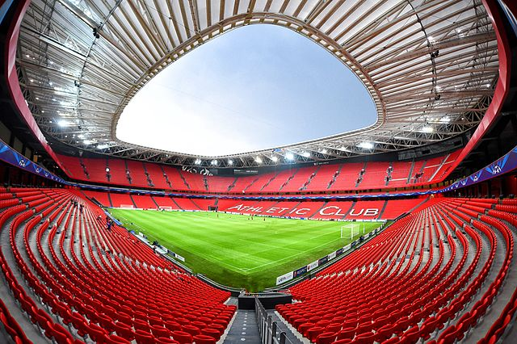
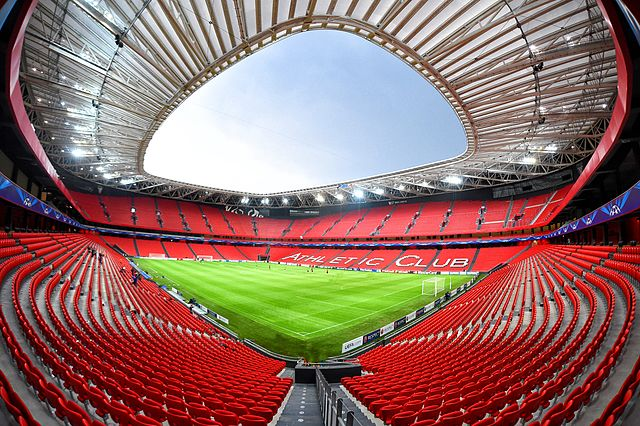

Bilbao, Spain
Athletic Club is a middle division soccer team that plays in the "San Mamés." This stadium has a capacity of 53,331 fans and is one of the newest stadiums in Spain. It was built in the year 2013.
Athletic Club is a middle division soccer team that plays in the "San Mamés." This stadium has a capacity of 53,331 fans and is one of the newest stadiums in Spain. It was built in the year 2013.
